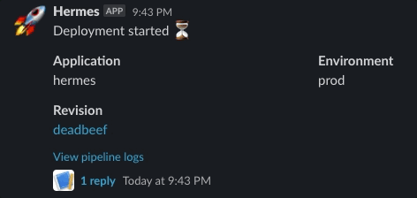

Slack
Setup Slack service
Create Slack application
In order to send notifications to your Slack channels, first you need to setup a Slack application in your workspace. An application defines the permissions and appearance of the bot that will interact with your channels. The end goal of this step is to obtain a Slack authentication token that will be used by Hermes to send notifications.
Choose one of the following two ways of creating the Slack application.
Use the manifest button
The button below will lead you to the app creation wizard in your Slack workspace where you will get to review the permissions it is requesting before adding it.
Manually create the application
If you do not really trust the button above, you can instead perform this process manually.
- Go to Slack Applications
- Press the "Create New App" button
- Choose the "From an app manifest" option
- Select the workspace you wish to create the app in
- Paste in the manifest below
_metadata:
major_version: 1
minor_version: 1
display_information:
name: Hermes
features:
bot_user:
display_name: Hermes
always_online: true
oauth_config:
scopes:
bot:
- chat:write
- chat:write.customize
settings:
org_deploy_enabled: false
socket_mode_enabled: false
token_rotation_enabled: false
Obtain the OAuth Token
- Go to Slack Applications
- Select the newly created Hermes app
- Click on "OAuth & Permissions" in the menu on the left
- Copy the "Bot User OAuth Token" and save it for later
Example
The provided example will generate following notification in your Slack channel.

Slack token
Create a secret containing the Slack token that you obtained using the setup guide.
Access to secrets
This example assumes that your workflow will be run using a service account that has access to this secret.
apiVersion: v1
kind: Secret
metadata:
name: slack-token
stringData:
token: # Your Slack token goes here
Template
Add the following template:
apiVersion: v1
kind: ConfigMap
metadata:
name: hermes-template-slack-default
data:
primary: |
{
"text": "{{message}}",
"blocks": [
{
"type": "section",
"text": {
"type": "mrkdwn",
"text": "{{message}}"
}
},
{
"type": "section",
"fields": [
{
"type": "mrkdwn",
"text": "*Application*\n{{app}}"
},
{
"type": "mrkdwn",
"text": "*Environment*\n{{env}}"
}
]
},
{
"type": "section",
"fields": [
{
"type": "mrkdwn",
"text": "*Revision*\n<{{revision_url}}|{{revision_sha}}>"
}
]
},
{
"type": "context",
"elements": [
{
"type": "mrkdwn",
"text": "<{{log_url}}|View pipeline logs>"
}
]
}
]
}
secondary: |
{"text": "{{message}}"}
Send notification
Fill in the channel name in the workflow below and submit it.
apiVersion: argoproj.io/v1alpha1
kind: Workflow
metadata:
generateName: notifications-test-
spec:
entrypoint: main
templates:
- name: main
steps:
- - name: setup-notifications
template: hermes-setup
- - name: pre-notification
template: hermes-notify
arguments:
parameters:
- name: message
value: "Deployment started :hourglass_flowing_sand:"
- - name: hello
template: hello
- - name: post-notification
template: hermes-notify
arguments:
parameters:
- name: message
value: "Deployment succeeded :white_check_mark:"
- name: hermes-setup
plugin:
hermes:
setup:
alias: default
service: slack
config:
token: slack-token
icon_emoji: ":rocket:"
- name: hermes-notify
inputs:
parameters:
- name: message
plugin:
hermes:
notify:
target: default
template: hermes-template-slack-default
config:
channel: # Your Slack channel name goes here
context:
message: "{{inputs.parameters.message}}"
app: hermes
env: prod
revision_sha: "deadbeef"
revision_url: "https://google.com"
log_url: "https://google.com"
- name: hello
container:
image: docker/whalesay
command: [cowsay]
args: ["hello world"]
Reference
Setup config
| Field | Required | Description |
|---|---|---|
| token | yes | The name of the secret containing the Slack OAuth token. The token has to be stored in the token field in the secret. |
| icon_emoji | no | A shortcode for the emoji to use as the bot avatar, e.g. :rocket. |
Notify config
| Field | Required | Description |
|---|---|---|
| channel | yes | The name of the channel to send the notification to, .e.g argo-alerts. |